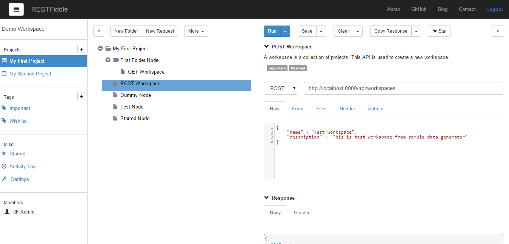

What is RESTFiddle?
RESTFiddle is an easy-to-use platform to work with APIs. It simplifies everything from API exposure to API consumption. RESTFiddle is an Enterprise-grade API Management Platform for teams. It helps you to design, develop, test and release APIs.
It often happens that developers directly try to consume a third party API in their application and write code for it. If any error occurs, developers have no clue about where the error lies. The error can be due to any reason- wrong headers or parameters or authentication or anything else. By using RESTFiddle platform to test a third party API before consuming it in their code, developers can easily catch the root cause of error. Similarly when an API is to be delivered or exposed, it can be thoroughly tested on RESTFiddle with no extra code to write.
RESTFiddle organizes requests in the form of a tree. Any number of folders can be organized one inside the other and requests can reside at any level in the hierarchy.
Backend as a service (BaaS) approach is followed in RESTFiddle. The features that are common to both, mobile and web application, are provided via BaaS. A common backend serves the need. Once the backend is ready, it remains a matter of calling APIs from different applications. Any database entity can be created through RESTFiddle. A set of APIs is autogenerated and provided to the user by RESTFiddle to facilitate CRUD operations on the entity.
RESTFiddle lets you easily craft any request, no matter how complicated it is, using the intuitive request builder. It is the rightmost section of RESTFiddle. Simply enter the fields required to run a particular request, select its type and run it. The response gets populated in the bottom part of the request builder. Response is displayed in two tabs- body and header.
User doesn't have to manually check the values from response. Test asserts will do the checks for you. You can save multiple test asserts against a response. Every time when the request is run, the asserts are checked. This saves the work of manually verifying values from the response.
RESTFiddle allows you to retrieve analytics metrics of the requests run.
Features
- Collaboration - Unlike most of the present day API testing tools where multiple people working on a project means exporting a set of APIs from one machine and importing it on another machine, RESTFiddle allows you to add collaborators. Collaborators work on a project in a synchronised manner. Automatic change notifications prevents to and fro email threads.
- History - There is an unlimited history or activity log of requests run by the user. User can select any request from the activity log. Rerunning the same is very easy as the previously entered fields get populated on selecting the request.
- Tagging - Tags provide a useful way to group related requests together. It is easy to search for any request based on tags attached with it.
- PDF Reports - RESTFiddle lets user run all requests from a project in one go. Project status reports in PDF format are generated that can be downloaded.
- Scheduler - You do not have to manually run an API project every time. Projects can be automatically run in predefined time intervals.
- SendGrid - SendGrid has been integrated to send notifications. User has control over which email notifications he wishes to receive.
- Cloud Deployment - RESTFiddle can be deployed over any server and can also be used as a cloud based hosted web application.
- Private - Install it in your environment and own it completely. Your data resides totally in your own database. Work together with your team in your private network.
- Swagger - Access RESTFiddle API documentation using Swagger UI, which is a very powerful respresentation of RESTful APIs.
- More - Since it is open source, fork it and build the features of your choice. There is much more like Security, Access Control and Notifications.
License:
Open source licensed under Apache License, Version 2.0.
Here is a screenshot of home page:
Workspace
RESTFiddle aims to avoid cluttering of different APIs. It is recommended to work in different workspaces for unrelated APIs.
A workspace is a collection of projects. Users can have private or shared workspaces.
Create Workspace
Click on the button in the header section, a list of menus appears below it. Select New Workspace.
A modal panel with name and description field appears on the screen. Enter the fields and save changes to create a new workspace.

Switch Workspace
Selecting Switch Workspace option from top menu button lets us work in another workspace.

A list of workspaces appear on modal. Choose the one you want to work in.

Workspace APIs
Getting available workspaces
Getting workspace by Id
Creating a new workspace
POST http://localhost:8080/api/workspaces
{"name" : "New Workspace Name"}Updating an existing workspace
PUT http://localhost:8080/api/workspaces/{workspaceId}
{ “id” : workspaceId, "name" : “Another Workspace"}Deleting an existing worksapce
Project
A step further to keep your set of APIs clean and separate is to create different projects within the same workspace. You can opt to create different projects when APIs are part of different modules, i.e. related to each other but providing totally different functionalities.
A Project is a top level entity within a workspace where all the request/response are organized.
Create Project
In the left navigation column, click on + symbol against Projects.

You can see a modal with project name and description fields to create the new project.

Request Tree
When you click on any project in left navigation, all the folders and requests within a project are displayed in the form of a tree in the middle column. This tree has no limitation on number of child folders/requests. A request or folder can exist as a node at any level down the tree.

Folders are meant to keep your requests in an organized manner. New Folder button above the request tree creates a folder under selected node or at the root. Similarly New Request is meant for creating a request. More about New Request is here.
Node Menus
Hover mouse over any of the nodes in the request tree, a down arrow appears. Clicking on the arrow will display the actions associated with the node i.e. Edit, Delete, Copy Node.

Edit Node
Edit node for a request allows editing its name and description.

Delete Node
This option asks for confirming deletion of node.
Copy Node
Copy Node copies a request and the checked attributes to a new request. Default name of node is Copy of RequestNodeName, which can be changed.

Project APIs
Getting projects within a workspace
Getting project by Id
Creating a new project
POST http://localhost:8080/api/workspaces/{workspaceId}/projects
{"name" : "New Project Name"}Updating an existing project
PUT http://localhost:8080/api/workspaces/{workspaceId}/projects/{projectId}
{ “id” : projectId, "name" : “Another Project"}Deleting an existing project
Request Builder
Click on New Request in the request tree column of RESTFiddle.

Enter the request name, description and save to create a new request. The request gets created under the folder selected in request tree. If no folder has been selected, a new request will get saved at root level.

You can now start building this new request in the Request Builder section of RESTFiddle.
Request Builder
Now you can easily craft any request, no matter how complicated it is. Request builder is the rightmost section of RESTFiddle. Enter the fields required to run a particular request, select its type and run it. The response gets populated in the bottom part of the request builder. Response is displayed in three tabs- body, header and asserts.

Query Param
You can add query params for any request by directly attaching them to url after question mark (?) symbol or by clicking on Add Query Param button and entering the key value. Example: We can sort the results fetched by adding value 1 or -1 to specify an ascending or descending sort respectively. So append ?sort={name:1} to url or add sort as key and {name:1} as value in Query Param.

Example of getting paginated results: Append ?page=1&limit=2 to request url or add 2 query params as page and limit.
Form Param
Form params can be added to a POST request. Click on Form tab of request and add key value pairs of form params to be added.

Asserts
Click on Asserts in the request tree column of RESTFiddle.
Click Add Assert. Enter the property name whose value is to be checked, select comparator value from dropdown and enter expected value of the property. Multiple asserts for a property can be added. Click Save Changes to save the entered asserts. Now the Asserts button will show the count of asserts added to the request.

When the request is run, asserts are evaluated and the results can be seen under Asserts tab in response section.
Request Header
You can attach multiple header fields to a request. In the Header tab, click on Add Header. Enter the header name and value.

Header name has autosuggest functionality(based on single alphabet). e.g. Typing 'r' in header name box suggests 'Range' and 'Referer'.
Authentication
RESTFiddle supports authentication in request. Select from the type of authentication listed under Auth section of request.

OAuth 2 Support
There is yet another milestone achievement in RESTFiddle! We have successfully tested Google Plus API using this platform. That also means successful OAuth 2 authentication using RESTFiddle. We fetched a Google Plus profile using Google APIs. Here is what needs to be done:
- Obtain OAuth 2 credentials from the Google Developers Console: Visit the Google Developers Console(https://developers.google.com) to obtain OAuth 2.0 credentials such as a client ID and client secret that are known to both Google and our application i.e. RESTFiddle. The set of values varies depending on the type of application. For example, a JavaScript application does not require a secret, but a web server application does.
- Select OAuth 2 from the 'Auth' dropdown of the request. Enter Authorization Endpoint as https://accounts.google.com/o/oauth2/auth, enter the generated client ID and scope as 'profile'. Scope controls the set of resources and operations that an access token permits. Click 'Get Access Token'. Authentication is asked for in a new window. After logging in, the user is asked whether they are willing to grant the permissions that your application is requesting. User consent is required else you will get error.

Now you can see the Access Token returned by Google Authorization Server. RESTFiddle does the work of entering this token in HTTP authorization header. This token will be used in further API requests.

Now enter the request URL and run it. You can see the data returned by the request in the response section:


Refer http://blog.restfiddle.com/2015/01/there-is-yet-another-milestone.html for more details.
Activity Log
You can see the history of requests run earlier with the most recent one on the top.

By clicking on a request, the data that was used to run the request gets populated in the request builder column. So you have quick access to run a request that was already executed earlier.

Starred
See all the most important/needed requests with a single click! Select Starred in the left navigation and all the requests marked star appear in the second column.


Tagging
You can categorize your requests and fetch them easily. Click on plus symbol against Tags in left nav.

Create a new tag by entering name and description in modal.

Tag APIs
Assigning selected tags to a node
POST http://localhost:8080/api/nodes/{nodeId}/tags
[ {
"id" : "{tagId1}"
},
{
"id" : "{tagId2}"
}]Collaboration
RESTFiddle frees you from the extra efforts of exporting requests from a machine and importing to other one. Now all you have to do is to simply add collaborators to your workspace. By clicking on the top menu, you get the option to add New Collaborator.
A modal appears which asks for name, email and password. The new collaborator person receives invite on the entered email id.

Project Runner
You can run a complete set of requests from a project. So there are no hassles of running requests one by one. Select the project whose requests you want to run and then click on More button in request tree section of RESTFiddle. Choose Run Project option from the menu.

PDF Report
After running a project, click on Export Report in request builder section to get a PDF report of the requests run.

API Builder
Create API with a click and run it on the fly.
You can create an entity by clicking on New Entity option in the second column. id, createdDate and lastModifiedDate are the fields created by the system.

Once the entity gets created, its services are generated and populated in the tree as shown:


You can fetch all the data created by running the Get List service of the entity.
Query Params
Filtering Filtering can be done using query params. After the request URL, attach the following: ?query={"name": "Jake"} e.g. http://localhost:8080/api/550d1a0a70246295670529c9/entities/employee/list?query={"name": "Jake"}
The same can be achieved by clicking on Add Query Param button: Key is query and value is {"name": "Jake"}.
Example of AND condition: http://localhost:8080/api/550d1a0a70246295670529c9/entities/employee/list?query={"employeeid" : "9999" , "name": "Jake"} Added this feature in issue #185.
Refer http://docs.mongodb.org/manual/tutorial/query-documents/ for more details/filtering conditions.
Sorting Add "sort={name:1}" after URL to sort. 1 for ascending and -1 for descending result. Added this feature in issue #184.
Refer http://docs.mongodb.org/manual/reference/method/cursor.sort for more details.
Paginated Result Add "?page=1&limit=3" after URL to sort. Limit is number of reults on a page. Added this feature in issue #183.
User Profile
Top menu offers the options to Update Profile and Change Password for the currently logged in user.
WebSocket
RESTFiddle supports WebSockets. Click on More button and select Socket.

The third column gets populated with fields to estaiblish and test a socket connection. Enter the address to which you want to connect and click on Connect. The Message Log will show the status 'Connected'. Enter a text and click Send. Message Log will show the sent text against 'SENT'. The received message is displayed as 'RESPONSE'.
Swagger
RESTFiddle API docs are available using Swagger UI.
This page is accessible at the following link: http://localhost:8080/sdoc.jsp